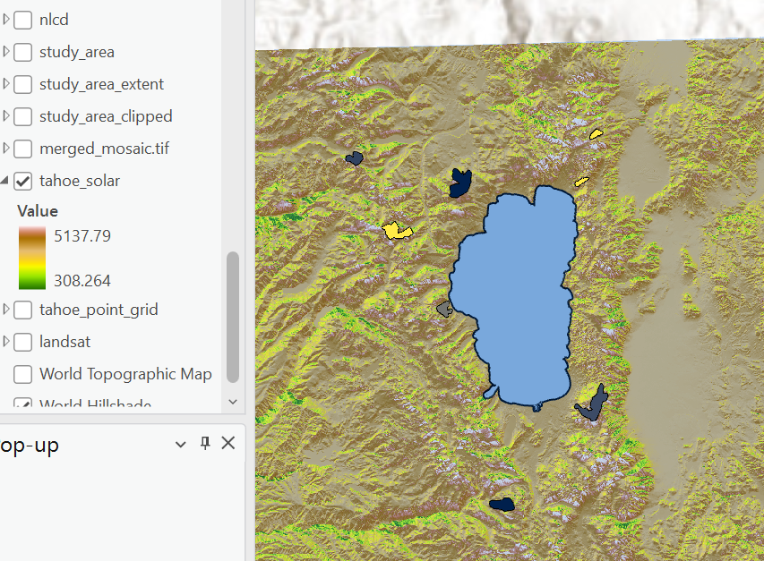
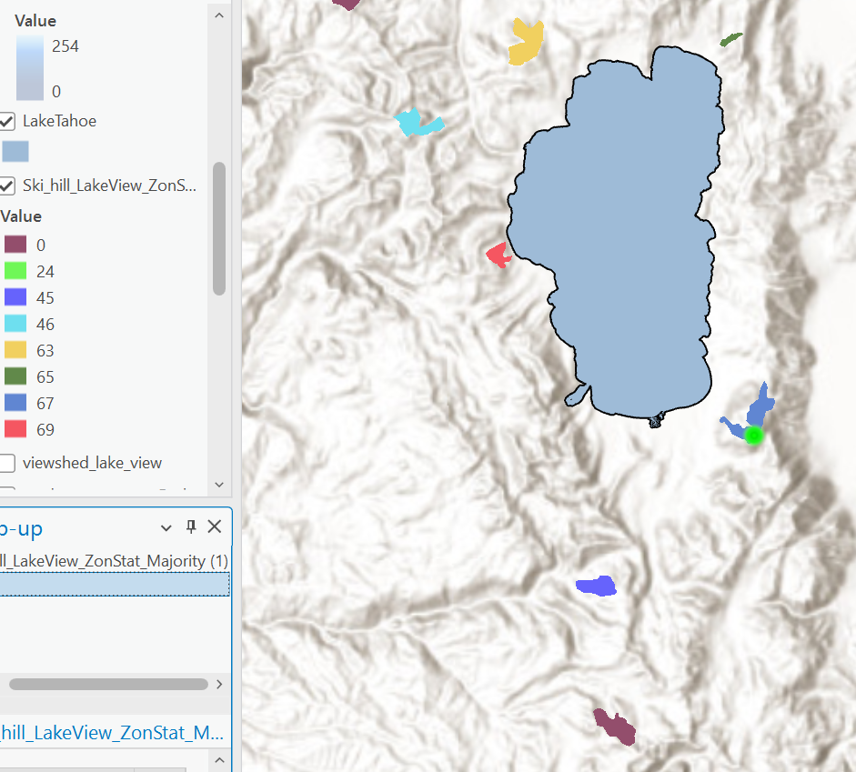
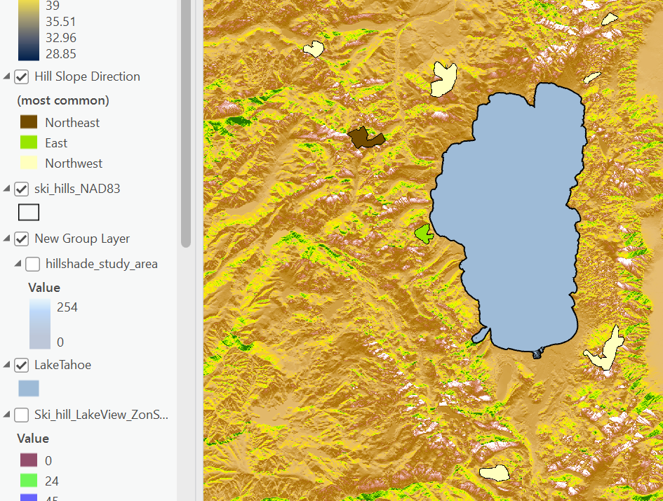

Lake Tahoe Ski Resorts: Beginner-friendly Favorite





This project entailed the utilization of raster workflow geoprocessing tools to investigate the use of Digital Elevation Models (DEM) and to conduct slope analysis within the Lake Tahoe study area. I generated the maps above using ArcGIS Pro to identify the optimal ski resort locations. The Viewshed Tool was applied to exclude ski resorts lacking superior views of the lake. Subsequently, I analyzed the average steepness (slope percent rise) and sun exposure (utilizing Tahoe Solar Data) for each polygon.
Based on my analysis, Homewood emerged as the most favored ski resort for semi-beginners skiiers who want a picturesque view of the lake.